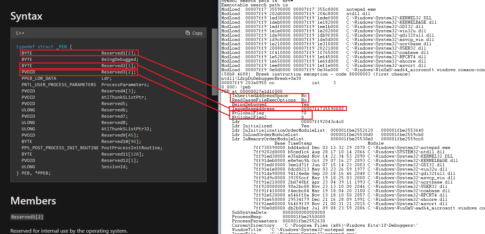

Introduction
When referencing the Windows documentation for a structure, one may encounter several reserved members within the structure. These reserved members are often presented as arrays of BYTE or PVOID data types. This practice is implemented by Microsoft to maintain confidentiality and prevent users from understanding the structure to avoid modifications to these reserved members.
With that being said, throughout this handbook, it will be necessary to work with these undocumented members. Therefore, some modules will avoid using Microsoft's documentation and instead use other websites that have the full undocumented structure, which was likely derived through reverse engineering.
PEB Structure Example
As mentioned in an earlier module, the Process Environment Block or PEB is a data structure that holds information about a Windows process. However, Microsoft's documentation on the PEB structure shows several reserved members. This makes it difficult to access the members of the structure.
typedef struct _PEB {
BYTE Reserved1[2];
BYTE BeingDebugged;
BYTE Reserved2[1];
PVOID Reserved3[2];
PPEB_LDR_DATA Ldr;
PRTL_USER_PROCESS_PARAMETERS ProcessParameters;
PVOID Reserved4[3];
PVOID AtlThunkSListPtr;
PVOID Reserved5;
ULONG Reserved6;
PVOID Reserved7;
ULONG Reserved8;
ULONG AtlThunkSListPtr32;
PVOID Reserved9[45];
BYTE Reserved10[96];
PPS_POST_PROCESS_INIT_ROUTINE PostProcessInitRoutine;
BYTE Reserved11[128];
PVOID Reserved12[1];
ULONG SessionId;
} PEB, *PPEB;Finding Reserved Members
One way to determine what the PEB's reserved members hold is through the !peb command in WinDbg.

For a more complete PEB structure, refer to Process Hacker's PEB structure.
Alternative Documentation
As previously mentioned, some modules will avoid using Microsoft's documentation and instead use other documentation sources.
Considerations
When choosing a structure definition, it's important to be mindful of the following points.
Winternl.h in the program will result in redefinition errors thrown by Visual Studio's compiler. To avoid this, select only one definition of the structure.